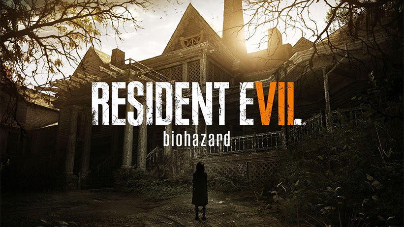

RESIDENT EVIL 7: BIOHAZARD
Resident Evil 7 estabelece um novo caminho em direção às raízes da franquia ao apresentar uma mudança dramática para os jogos com uma perspectiva em primeira pessoa e visual produzido com um novo motor gráfico, a RE Engine, da Capcom.

ANÁLISES
Em Resident Evil 7 você é Ethan Winters, um homem que acreditava que sua esposa, Mia, havia morrido há três anos, até que ele recebe uma mensagem misteriosa sobre seu desaparecimento. As pistas sobre o paradeiro de Mia levam Ethan até a cidade de Dulvey, na Louisiana, onde ele encontra a propriedade da bizarra família Baker.
PERSONAGENS
ETHAN WINTERS
MIA WINTERS
JACK BAKER
MARGUERITE BAKER
O jogo é ambientado em uma cidade interiorana dos Estados Unidos após os eventos dramáticos de Resident Evil 6. Os jogadores vivenciam o terror diretamente da perspectiva dos olhos do personagem que controlam.
Resident Evil 7 incorpora elementos de jogabilidade conhecidos da franquia, com a exploração e a atmosfera tensa que deram origem ao termo “survival horror”, ao mesmo tempo que mostra uma completa atualização dos sistemas interativos, elevando a experiência de horror de sobrevivência. Criado com a RE Engine em conjunto com tecnologias de ponta de áudio e vídeo, Resident Evil 7 proporciona uma experiência assustadoramente realística aliada à realidade virtual.
Resident Evil 7 foi lançado inicialmente para PlayStation 4 (compatível com VR Mode), Xbox One e Windows PC (Steam e Windows 10 – Xbox Play Anywhere) em 2017. No mesmo ano, o título também ganhou uma Gold Edition com diversos conteúdos adicionais inclusos, como End of Zoe e Not a Hero, que expandem sua história. Já em 2018 foi a vez do Nintendo Switch receber a sua própria edição, Resident Evil 7 Cloud Version, que funciona por meio de streaming e conta com um modo de aluguel. Todas as versões têm menus e opção de legenda em português do Brasil.